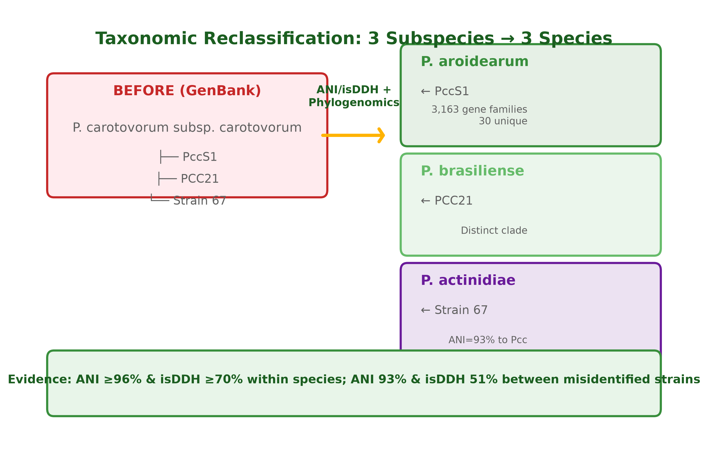
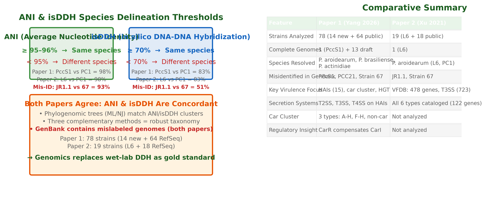

How genomics resolved the Pectobacterium species problem
The Problem
Pectobacterium (formerly Erwinia) causes soft rot in potatoes, cabbage, ornamentals, and staples worldwide. For decades, taxonomy relied on 16S rRNA and biochemistry — insufficient for species-level ID. P. carotovorum subsp. carotovorum became a "catch-all" taxon for diverse isolates.

Figure 1. Three P. carotovorum subsp. carotovorum strains reclassified as distinct species via ANI/isDDH and phylogenomics. PccS1 → P. aroidearum; PCC21 → P. brasiliense; Strain 67 → P. actinidiae.
What the Papers Found
Paper 1 (Yang 2026): 78 strains (14 new isolates + 64 GenBank). Phylogenomics (ML/NJ trees on single-copy orthologs) + ANI/isDDH matrices confirm 3 subspecies elevations and validate 14 new isolates at species level.
Paper 2 (Xu 2021): Complete genome of P. aroidearum L6 (4.99 Mb). ANI=98%, isDDH=83% with PC1 — same species. But P. carotovorum subsp. carotovorum JR1.1 vs Strain 67: ANI=93%, isDDH=51% — different species mislabeled in GenBank.
Both papers: ANI ≥95–96% and isDDH ≥70% are the genomic gold standard, replacing wet-lab DDH.

Figure 2. Threshold concepts and cross-paper comparison. Paper 1: 78 strains; Paper 2: 19 strains. Both find GenBank mislabels. Concordance between ANI, isDDH, and phylogeny validates the genomic standard.
Key Takeaways
Three subspecies → three species: PccS1 (P. aroidearum), PCC21 (P. brasiliense), Strain 67 (P. actinidiae)
Genomics > 16S rRNA: 16S trees (Fig 2B in both papers) show poor resolution; whole-genome phylogeny is decisive
Three methods = robust: ML tree + NJ tree + ANI/isDDH concordance gives confidence
Check Your Understanding
Question: Why is 16S rRNA sequencing insufficient for species-level identification in Pectobacterium, and what genomic metrics do Yang et al. (2026) and Xu et al. (2021) use instead?
Write your answer in your own words. The tutor will evaluate and guide you.